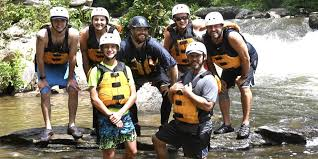

About Us
Who We Are
Welcome to White Water Rafting! We are a passionate team dedicated to providing exciting, safe, and memorable rafting adventures for individuals, families, and groups. Our experienced guides help guests enjoy the beauty of nature while experiencing the thrill of the river.
History
White Water Rafting was founded with a passion for outdoor adventure and a love for the river. What started as a small group of rafting enthusiasts has grown into a trusted company known for exciting trips, excellent customer service, and a commitment to safety.
Over the years, we have welcomed thousands of visitors and created unforgettable memories for families, friends, schools, and adventure seekers from around the world.
Our Team

Our team consists of highly trained rafting guides and outdoor professionals who are dedicated to making every trip safe, enjoyable, and unforgettable.
Our Mission
Our mission is to provide safe and exciting rafting adventures for beginners and experienced rafters alike. We strive to create lasting memories while promoting teamwork, confidence, and appreciation for the outdoors.